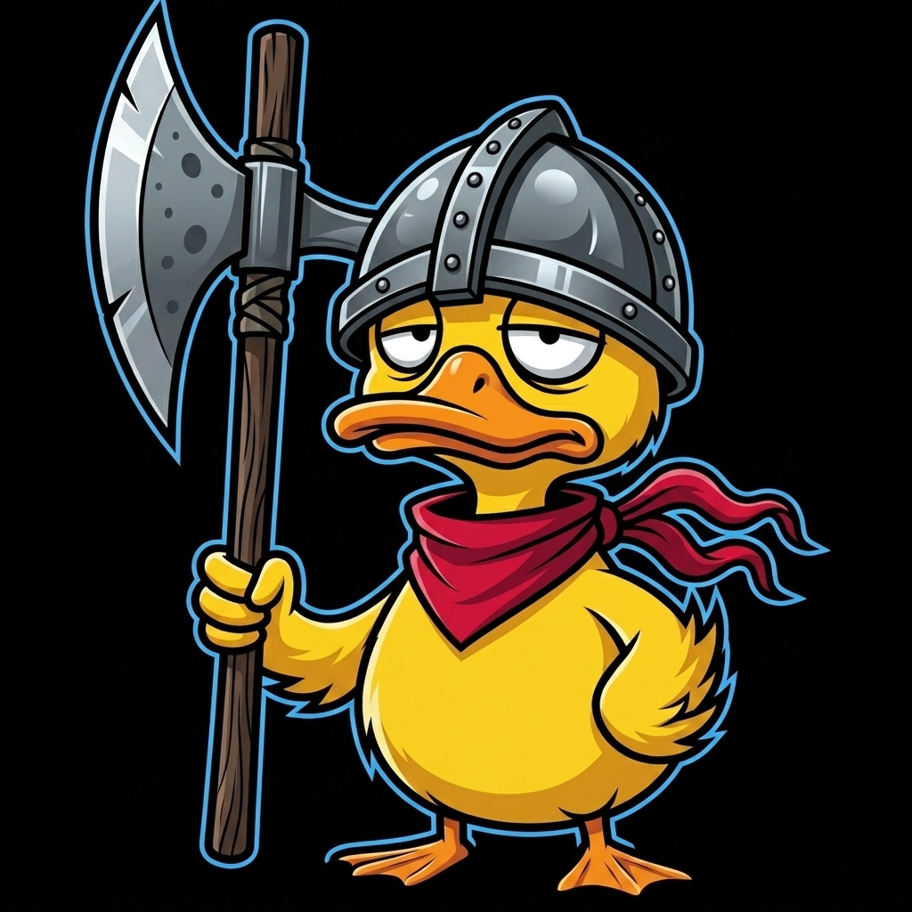
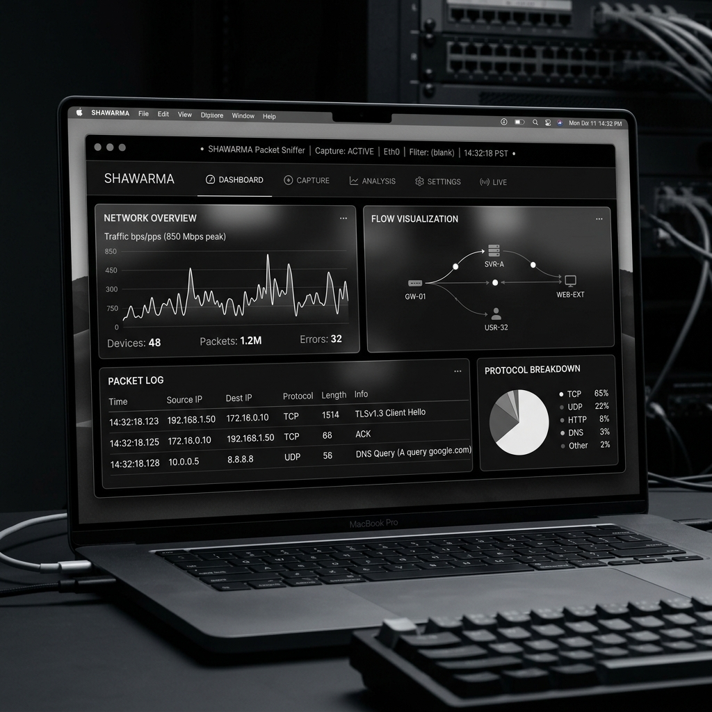

ChickenwingLayered network analysis wrapped in a brutalist monochrome HUD.

Monitor incoming and outgoing traffic with microsecond precision. Filter through layers of protocols with ease.
Designed for focus. A high-contrast, distraction-free interface that puts the raw data at the center of your plate.
Identify sensitive data leaks and suspicious patterns automatically with built-in heuristic analysis.